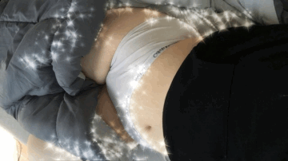

"I was pacing in front of the dorms hoping my crush would suddenly walk out and sweep me into a romantic kiss goodbye, when I gave up and planted myself in the commons. I took this photo because I wanted to document something sweet and lovely that I never would have noticed unless I was glum enough to look down, and as something to post on instagram to remind him of me. (I ended up reflecting on how ridiculous I was behaving and sent it/any prospect of our relationship straight to the trash, instead.)"
"A boy from Portland bought me a dildo"
"mysterious little leafy visitors to the class..."

"hey babe here is my tummy!"
"I took this sitting in the parking lot outside one of my lecture halls. I was on the phone with my dad, who just told me about an opportunity to meet with the founders of an LA tech startup that happened to be in my hometown. I'll be meeting them this week, now that I'm moved back home for summer. I have no idea what my future holds, but it's evenings like this which remind to not get caught worrying about tomorrow, but to remember to enjoy today."
"my girlfriend took this picture. I felt very happy but also like really high"
"Took this selfie cause I felt weird and my coworker said I looked upset. I was smoking before work and frustrated. anyway that's the last photo"
"I miss you so so so so so so so so so so much"
"art selfie"
"Found in a cemetery, hiding in the tall grass"
"My roommate refuses to clean their cutting board so I keep photographing it every day they leave it out for a personal collection"
"a student greets me at LTAB"
"This is the last picture I took on my phone.
It's a view through a microscope lens looking at a slide of a mouse ovary.
The pointer is pointing to an oocyte in its follicle with a developing egg inside it"